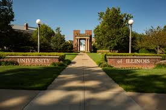
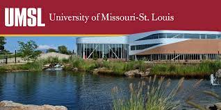
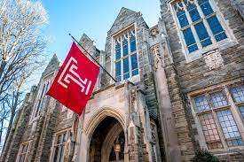
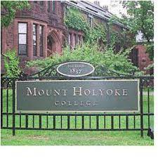
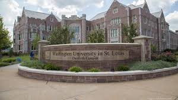
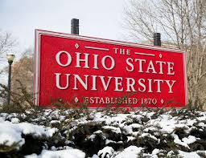

University of Illinois @ Urbana-Champaign
I started my undergrad career in one of the largest state school systems in Illinois: University of Illinois. Here I studied Molecular & Cellular Biology while minoring in Russian. During my two years at UIUC, I took up hobbies such as ballroom and bellydancing while working as a math tutor and customer service rep at Blockbuster Video and Burger King.
University of Missouri - St. Louis
I later transferred to UMSL to be closer to my hometown on E. St. Louis, IL. I switched over to studying mathematics and education. I spent the second half of my undergraduate career here and graduated with a double major: B.A. - Mathematics & B.S.Ed. - Secondary Education (Math). I worked as a certified pharmacy tech at Walgreens Pharmacy and a caretaker for my parents in my downtime.
Temple University
After graduation, I taught high school mathematics for years (Algebra, Geometry, Precalculus and AP Calculus AB), before I decided to finally pursue the original dream I started at UIUC: medical school and/or research. I moved to Philadelphia, PA and started a Professional Science Masters (PSM) program at Temple to dip my toe in the research field as a career changer. I taught calculus at an all girls Catholic school in the daytime and worked as a research technician in an HIV lab at night at Temple. This was a very fulfilling experience that lead me to the conclusion that I wanted to become an MD.
Mount Holyoke College
My time at Temple lead me to my first premed post baccalaureate program at a mostly all women's college in South Hadley, MA: Mount Holyoke College. Here I took all of the prerequisites required to apply to medical school. I made some great friends here, tried lobster for the first time and visited the bar from Cheers! Although it was a busy time, it was a really illuminating and fun time in my life.
Washington University - St. Louis
After my post bacc at MHC, I worked as a research assistant/technician in a biomedical research lab at Wash U before gaining experience with clinical research in the Neurosurgery dept. As a full time employee, I took full advantage of their tuition reimbursement program and participated in many semesters of night classes.
The Ohio State University
OSU is my most recent school experience. I completed a one year medical school preparation program and returned to the STL area shortly after, where I am currently participating in an incredible coding class. I hope that this skill will be able to change my life in a meaningful way!